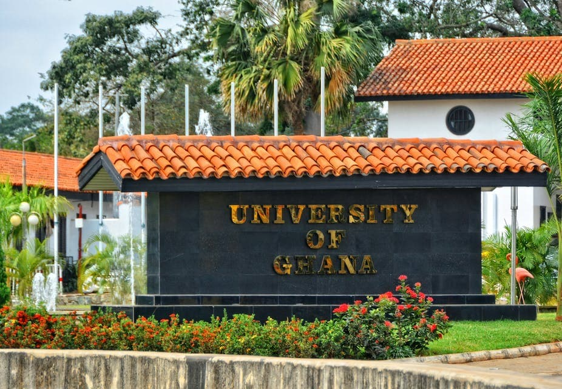
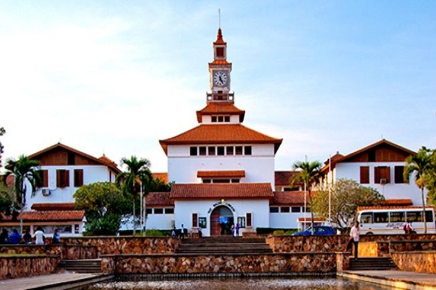

Your source for news and updates from the University of Ghana, Legon.
The University of Ghana, Legon, is more than just a hub of academic excellence – it's a melting pot of cultures, ideas, and innovation...
The University of Ghana, Legon, is more than just a hub of academic excellence – it's a melting pot of cultures, ideas, and innovation. As one of the premier institutions of higher learning in West Africa, it has a rich history that spans over seven decades.
Imagine walking through the vibrant campus, surrounded by lush greenery and state-of-the-art facilities. You're likely to bump into students from all over the continent, engaged in lively debates, collaborative projects, or simply soaking up the infectious energy that permeates the air.
The university's story began in 1948, when it was founded as the University College of the Gold Coast. Back then, it was an affiliate college of the University of London, which supervised its academic programs and awarded degrees. Fast forward to 1961, and the University of Ghana gained full university status.

Today, the University of Ghana is a beacon of academic excellence. Its academic programs are designed to equip students with knowledge and skills. From the Bachelor of Arts in Education to the Bachelor of Laws and Medicine, the university offers a wide range of programs.

The university values creativity, innovation, and entrepreneurship. As you explore the campus, you'll notice a blend of modern and traditional architecture, reflecting its commitment to preserving heritage while embracing innovation.
The University of Ghana is led by visionary leaders like Mary Chinery-Hesse and Nana Aba Appiah Amfo. They are passionate about shaping the next generation of leaders.
In conclusion, Legon is a world-class institution where young people come to discover their passions, develop their talents, and unleash their potential. Whether you're interested in academics, sports, or entrepreneurship, Legon has something for everyone.